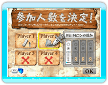
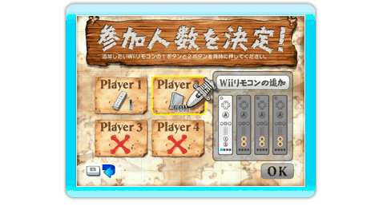

各プレイヤーが順番に樽へ剣をさしていき、より多く剣をさすことを競うモードです。誤ってハズレ穴に剣をさし、黒ひげを飛ばしてしまうとゲームオーバーになります。
メインメニュー画面から「みんなで黒ひげ！モード」を選ぶと、参加人数を決定し、順番を決定して、基本モードの本編に移ります。

● 参加人数の決定
ゲームを始める前に、まず操作するリモコンの割り当て、プレイ人数を決めます。画面上のポインタを動かして、各プレイヤーの割り当てを設定してください。
まず画面左側のアイコンを選んで、 ボタンを押していくと、「登録リモコン1〜4」→「COM」→「NONE（メンバーなし）」の順に切り替わります。
ボタンを押していくと、「登録リモコン1〜4」→「COM」→「NONE（メンバーなし）」の順に切り替わります。
※プレイヤー1は他のリモコン・COM・メンバーなしへの変更はできません。
※プレイヤー人数を２人以下に設定することはできません。
○ リモコンを追加登録したい場合
追加したいリモコンのボタンとボタンを同時に押してリモコンを追加登録できます。リモコン登録後は画面左側のアイコンから追加登録したリモコンを選択できます。
● 順番の決定

参加人数を決めたら、続いてプレイヤーの順番を決定することになります。毎回、ランダムで決定されます。
画面下にささった剣の上に立っている看板が回転し、ボタンを押すか、3秒経過すると看板が止まります。自分の剣の色が決まることで、順番が決まります。
赤：1番目、青：2番目、黄：3番目、緑：4番目となります。

 ボタンの左で左に、
ボタンの左で左に、